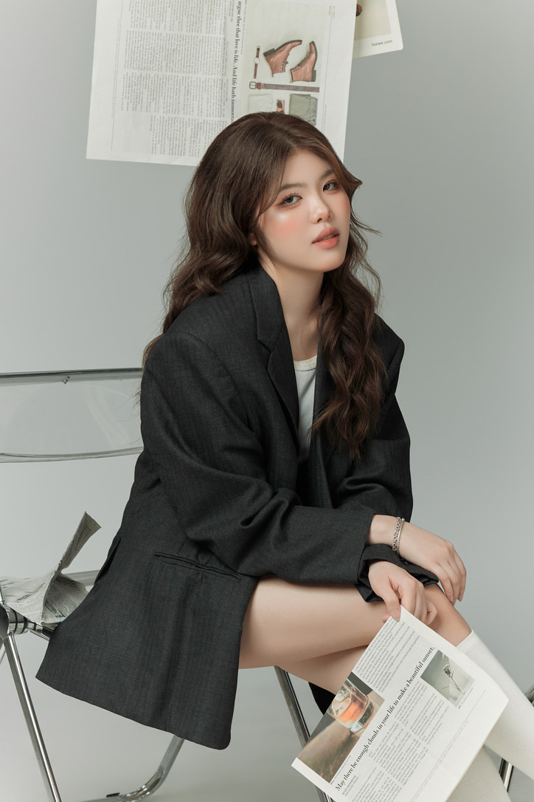

Tran Hoang — UI/UX Designer
I am a recent Information Systems graduate from the University of Maryland, Baltimore County (UMBC), holding a professional certificate in User Experience, Web, and Mobile Development. Throughout my academic and hands-on project experiences, I’ve focused on bridging the gap between complex technology and human-centered design. From building accessible user interfaces to managing full-cycle design projects, I enjoy creating digital solutions that are inclusive, intuitive, and built for diverse user needs.
What drives me as a UI/UX designer is the intersection of empathy, structured problem-solving, and visual storytelling. To me, great design isn't just about how an interface looks—it’s about how seamlessly it works and how effectively it solves a real-world problem.
OOutside of design, you can usually find me brewing the perfect matcha or capturing details through a camera lens. Both hobbies teach me to slow down, observe closely, and find inspiration in the details—qualities I bring directly to my design process. I am officially on the market for full-time UI/UX design, product design.